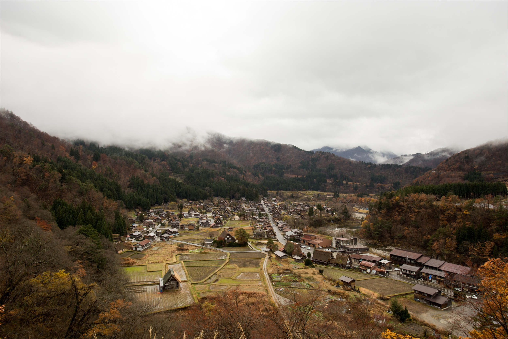

Shooting in low light can produce some stunning results. Colors are
richer in the early and late hours of the day, and subjects such as
buildings that are dull and uninteresting during daytime take on an
entirely new persona lit up at night. This article looks at some
techniques for making the most of low light situations.
ISO and Shutter Speed
It is tempting when shooting in low light to simply increase the ISO
sensitivity on your camera (or use a faster film if you shoot with
film). This may not always be the answer. Increasing ISO sensitivity
decreases image quality. You will find that grain begins to appear.
How visible this is of course depends on your camera or choice of
film. An alternative is to set yourself to use slower shutter speeds.
How much you are able to slow down your shutter speed without creating
blurring due to camera shake depends on how steady your hand is. Try
leaning against a wall or post, holding your breath and squeezing down
slowly on the trigger. This is a method I use quite often and I have
found that results improve significantly with a bit of practice.
Tripods
Using a tripod can have both technical and creative benefits. A tripod
stabilizes your camera producing a sharp image when a long exposure is
needed. It also enables you to reduce the ISO speed used to create a
better quality image as discussed above. A tripod can also be used to
create interesting effects should the scene contain moving objects.
For example, a street scene with traffic passing by. Slow shutter
speeds capture the motion of vehicles as they pass and the light
trails from head and tail lights, adding life and energy to the scene.
For many low light situations, a tripod is an essential piece of
equipment and the only way of coming away with a decent image. An
alternative could be to rest your camera on a flat surface if one is
available.
Landscape Photography
By Thamer TRA

Canon DSLR
One of the great things about landscape photography is that the
possibility is endless on where you can go, what to take a picture of
and it all starts with a few steps from your own back door. The
horizon is your limit.
Lighting speaks volumes in landscape photography. Getting up with the
sun at dawn, watching the animals hurry around as they gather their
food for the day, and while the sun is just peaking its face over the
background would make for great photo with perfect light. When the sun
is on its way down, this is great for a landscape picture of peace and
serenity. This time of day is when animals and people are heading home
for the night where the land is clear of “clutter” and the trees,
skies and land are open. Shadows will add depth to any photo of the
landscape and give it more of a three-dimensional feel to it.
Landscape photography should be relaxing and fun to do. It also
requires some time to get the precise composition. When a camera is
slightly shifted one way or another, you can see how it will
dramatically improve the picture you are looking to take. When it
comes to taking a picture of the landscape, taking one photo is just
as good as taking ten. You do not have to waste film on something that
can be done right the first time, this can be achieved with a bit of
patience, and some practice.
When photographing landscapes, give your photo a feeling of depth by
including close objects in the frame as well as the distant objects. A
fine lens for landscape photography is the 50 mm lens that comes as
standard equipment on many SLR cameras.But if you are seriously
interested in photographing landscapes, a good lens to have would be a
wide-angle lens. Losing detail due to camera shake is the biggest
problem in landscape photography.So, a tripod and a shutter release
cable are very helpful tools to have.
Travel Photography
By Thamer TRA
travel photo
Ok. So you’ve read up on the technical side of taking great photos.
You know your aperture from your exif and you’ve experimented with
shutter speeds. But there is something missing from the photos you’ve
been taking. They’re ok, but that’s it. Just ok. Why? You wonder.
Well, here’s a little secret: it’s all about luck. Well not really.
More to the point, great travel photography is about creating your own
luck.
Preparation
There is an art to being lucky in travel photography, and it usually
involves a lot of hard work. Research is the key. Find out all you can
about where you are going. Read travel guides, books, newspaper and
magazine articles, scour the internet, watch television programs.
Knowing a little about what life is like in that part of the world can
go a long way to getting the most out of your time there. For
instance, how would the locals react to someone trying to take their
picture? Some cultures can be quite offended by having their photo
taken. This is especially true of women in Islamic countries. At other
times, people will practically beg you to take their picture.
Sometimes, you will be expected to pay for the privilege.
Flexibility
Sometimes the shot you want is just not possible. You may be in a busy
city square attempting to photograph a serene monument basking in the
afternoon sun, but being interrupted by a stream of passers by
wandering through the frame. Unless you are able to stop traffic, you
are not going to get the shot you came for. This is where you might
need to adjust your approach. Try to capture the feel of the place as
it is. If the square is bustling with people going about their day,
show it as such. Make your focus the intensity and speed of which life
moves within the space. Be creative. Maybe use a bit of motion blur to
capture the essence of a city in a hurry. You might also be able to
return at a quieter time to capture that monument at peace. Again this
comes back to preparation and research. Yes, I’m harping on about that
again, but it really is that important.
The Wider Picture
Doubtless you will arrive at your destination with an intended
subject. Maybe the local people, or architecture, or you’ve planned
your trip around a particular festival that is taking place. However,
do not limit yourself to this one subject. Instead of fixing your
viewfinder on a subject and keeping it trained, try looking around
you. Look up, down, behind you. You will be amazed at how much more
there is to photograph. And how much more of a sense of time and place
you will be able to show in your images. Isn’t that your purpose
anyway?
Great travel photography does require great technical skills. Let’s
not kid ourselves about that. But more often than not it’s about being
in the right place at the right time and having the awareness to take
complete advantage of it.